Wstęp
Nauczysz się jak zrobić grę, w której zadaniem gracza jest kierowanie łódką tak, by ominęła przeszkody i dotarła do bezludnej wyspy.
Krok 1: Rysowanie planszy
Zadania do wykonania
Rozpocznij nowy projekt w Scratchu i usuń duszka kota. Edytor Scratcha możesz znaleźć tutaj: jumpto.cc/scratch-new.
- Narysuj nowe tło, które będzie planszą gry. Powinny się tam znaleźć:
- pnie, które łódka będzie musiała omijać;
- bezludna wyspa, do której łódka musi dotrzeć.
Plansza może wyglądać tak:
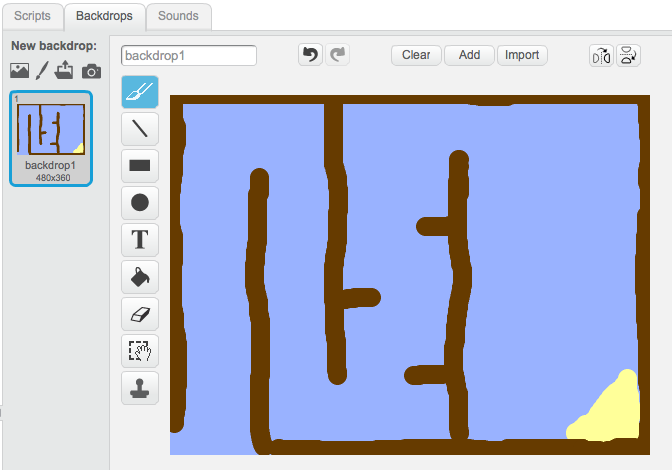
Krok 2: Kierowanie łódką
Zadania do wykonania
Jeśli prowadzący klub przekazał Ci folder “Zasoby projektu”, kliknij na przycisk “Wczytaj duszka z pliku” i dodaj obrazek “łódka.png”. Zmniejsz duszka i umieść go na starcie.
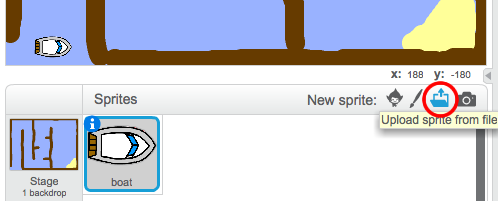
Jeśli nie masz pliku “łódka.png” możesz narysować własną łódkę!
Będziesz kierował łódką za pomocą myszki. Dodaj takie bloki do skryptu łódki:
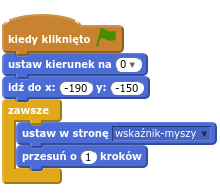
Przetestuj łódkę klikając na zieloną flagę i ruszając myszką. Czy łódka płynie w stronę wskaźnika myszki?
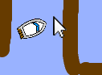
Co się dzieje, gdy łódka dogania wskaźnik myszki?
Żeby temu zapobiec musisz dodać blok
jeżelido skryptu, tak żeby łódka ruszała się tylko wtedy, gdy jest dalej niż 5 pikseli od myszki.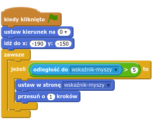
Przetestuj łódkę ponownie. Sprawdź, czy problem zniknął.
Zapisz swój projekt
Krok 3: Katastrofa!
Ta łódka potrafi przenikać przez drewniane ściany! Naprawmy to!
Zadania do wykonania
Będziesz potrzebować dwóch kostiumów dla łódki, jednego normalnego i drugiego dla rozbitej łódki. Zduplikuj kostium łódki, jeden kostium nazwij “cała” a drugi – “rozbita”.
Kliknij na kostium “rozbita” i przy pomocy narzędzia “Wybierz” wycinaj kawałki łódki, przesuwaj je i obracaj. Niech łódka wygląda na rozbitą na kawałki.
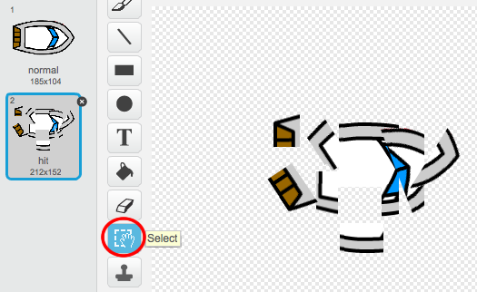
Dodaj następujące bloki do skryptu łódki, wewnątrz pętli
zawsze, tak żeby łódka rozbijała się zawsze gdy dotyka drewna: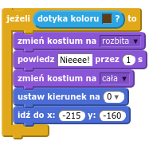
Nowy kod jest wewnątrz pętli
zawsze, żeby ciągle sprawdzać, czy łódka się nie rozbiła.Pamiętaj o tym, żeby łódka na starcie gry była cała.
Teraz gdy spróbujesz wpłynąć na drewnianą barierę powinieneś zobaczyć jak łódka się rozpada i wraca na start.
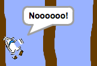
Zapisz swój projekt
Wyzwanie: Wygrana!
Potrafisz dodać jeszcze jeden blok jeżeli do kodu łódki tak, żeby gra mogła zakończyć się zwycięstwem gracza, gdy łódka dotrze do wyspy?
Kiedy łódka dotrze na żółtą wyspę powinna krzyknąć “Hurra!” i gra powinna się zatrzymać. Będziesz potrzebować takich bloków:
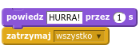
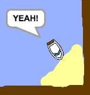
Zapisz swój projekt
Wyzwanie: efekty dźwiękowe
Czy potrafisz wzbogacić grę o efekty dźwiękowe, gdy łódka robija się lub dociera do wyspy? Możesz nawet dodać podkład muzyczny (zajrzyj do projektu “Kapela rockowa”, jeśli nie wiesz jak to zrobić).
Zapisz swój projekt
Krok 4: Pomiar czasu
Dodaj do gry pomiar czasu, żeby gracz starał się dotrzeć do wyspy jak najszybciej.
Zadania do wykonania
Dodaj nową zmienną o nazwie
czasdo skryptu sceny. Możesz też zmienić sposób wyświetlania zmiennej. Jeśli nie wiesz, jak to zrobić, zajrzyj do projektu “Balony”.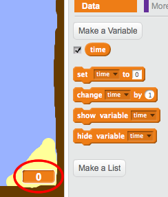
Dodaj poniższy kod to skryptu sceny. Dzięki temu, stoper będzie odmierzał czas aż do chwili dotarcia na wyspę:
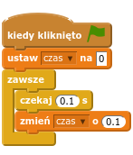
To wszystko! Przetestuj grę i sprawdź, jak szybko portrafisz dotrzeć na wyspę.
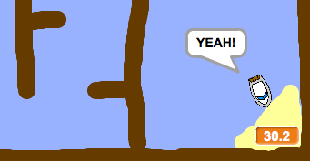
Zapisz swój projekt
Krok 5: Przeszkody i przyspieszacze
Gra jest o wiele za łatwa. Dodaj parę rzeczy, żeby stała się ciekawsza.
Zadania do wykonania
Najpierw dodajmy “przyspieszacze”, które rozpędzą łódkę. Włącz edycję tła sceny i dorysuj parę strzałek przyspieszających.
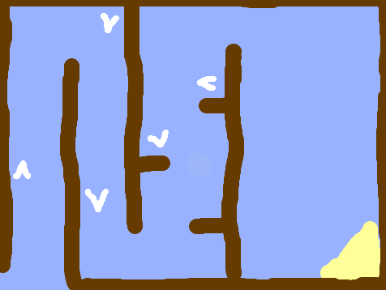
Teaz dodaj nowe bloki do pętli
zawszew skrypcie łódki, żeby przesuwała się 2 dodatkowe kroki kiedy dotyka białego przyspieszacza: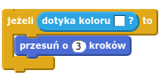
Możesz też dodać obracającą się bramę, którą łódka będzie musiała ominąć. Dodaj nowego duszka “brama”, który wygląda tak:
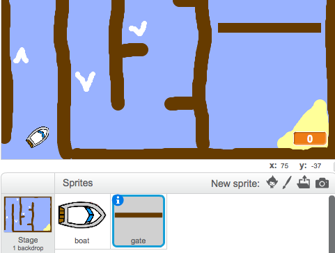
Zwróć uwagę, żeby kolor bramy był taki sam, jak kolor drewnianych przeszkód.
Ustaw środek duszka bramy.
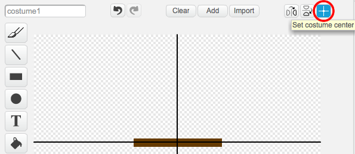
Dodaj kod do duszka bramy, tak by brama powoli się obracała. Użyj pętli
zawsze.Przetestuj grę.
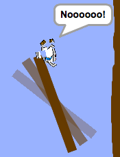
Zapisz swój projekt
Wyzwanie: Więcej przeszkód!
Potrafisz dodać do gry więcej przeszkód? Oto parę pomysłów:
- Możesz dorysować na planszy zielone wodorosty, które spowalniają łódkę. Możesz do tego użyć bloku
czekaj:
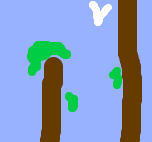
- Możesz dodać poruszający się obiekt, taki jak kłoda drewna albo rekin!
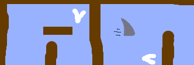
Przydatne będą takie bloki:
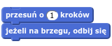
Jeśli nowe obiekty nie są brązowe, musisz dodać następujące bloki do skryptu łódki:
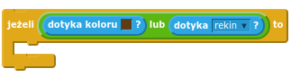
Zapisz swój projekt
Wyzwanie: Więcej łódek!
Potrafisz zmienić grę w wyścigi między dwoma łódkami?
- Zduplikuj duszka łódki, nazwij go “Gracz 2” i zmień kolor łódki.
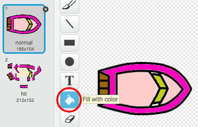
- Zmień pozycję startową gracza 2, zmieniając wartości w bloku:
- Usuń kod, który kieruje łódką za pomocą myszy:
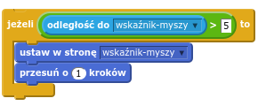
… i zastąp go kodem, który kieruje łódką przy pomocy klawiszy strzałek.
This is the code you’ll need to move the boat forward:
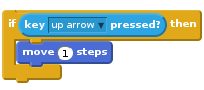
You’ll also need code to turn the boat when the left and right arrow keys are pressed.
Save your project
Challenge: More levels!
Can you create additional backdrops, and allow the player to choose between levels?
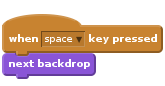